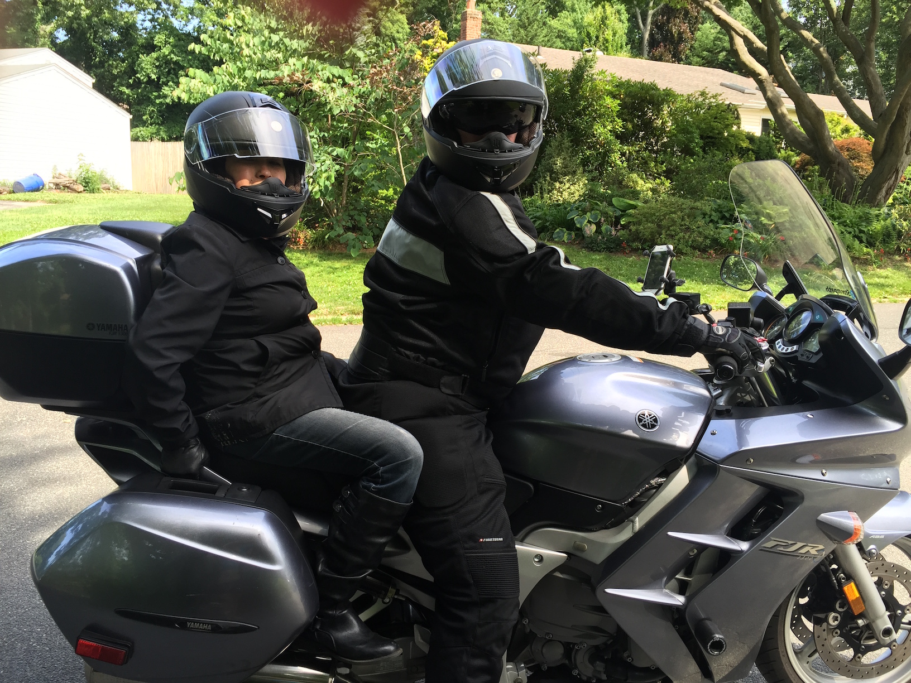

Java RoadStorm Tour - 2016
I'm Micah Silverman and I am Stormpath's Java Developer Evangelist.
Beginning on September 24th, I will be riding my Yamaha FJR1300A from New York, NY to Atlanta, Georgia and back. Along the way, I will be giving a talk on securing Microservices with JWT's (JSON Web Tokens) using the JJWT library. My talk is based on the talk I gave at NY JavaSIG
Here's the route I'll be taking:
Here's the current schedule of talks:
| Date | Location | Host | Address | Time |
|---|---|---|---|---|
| 9/27 | Atlanta, GA | WeWork | 3340 Peachtree Rd NE, Atlanta, GA 30326 | 7:00PM |
| 10/3 | Charleston, SC | The Iron Yard - Charleston | 17 Princess Street, Charleston, SC | 6:00PM |
| 10/4 | Charlotte, NC | The Iron Yard - Charlotte | 222 S Church St, floor 1M, Charlotte, NC | 6:00PM |
| 10/5 | Richmond, VA | IPPON & RJUG | 2700 East Cary Street, Suite C – Richmond, VA 23223 | 6:00PM |
| 10/6 | Washington, DC | DCJUGM | TBD | TBD |
| 10/7 | Philadelphia, PA | Benjamin's Desk & Philly JUG | 1701 Walnut Street 7th Floor, Philadelphia, PA 19103 (The Allman Building) | 7:00PM |
| 10/17 | Long Island, NY | WorkMarket & CodeStrong Island | 7 High St., Huntington, NY | 7:00PM |
I'll be posting daily dispatches from the road here.